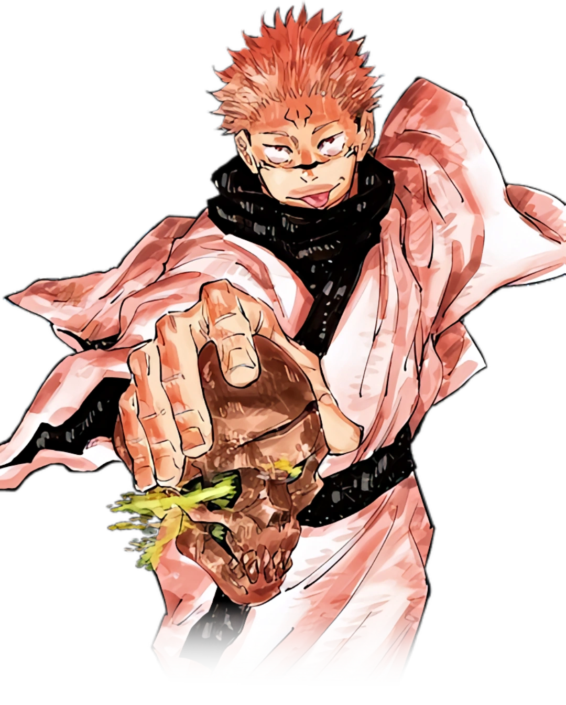

História de Jujutsu Kaisen
Conheça a origem do universo de Jujutsu Kaisen, seus personagens, maldições e os acontecimentos que marcaram a obra.
O Mundo das Maldições
Jujutsu Kaisen se passa em um mundo onde emoções negativas humanas dão origem às maldições, criaturas extremamente perigosas que ameaçam constantemente a humanidade.
Para combater essas entidades, existem os feiticeiros jujutsu, pessoas treinadas para utilizar energia amaldiçoada em batalhas. Entre eles está Yuji Itadori, um jovem estudante que acaba se tornando hospedeiro de Ryomen Sukuna, conhecido como o Rei das Maldições.
Após ingerir um dos dedos de Sukuna para salvar seus amigos, Yuji passa a frequentar a Escola Técnica Jujutsu de Tóquio, onde conhece Megumi Fushiguro, Nobara Kugisaki e o poderoso Satoru Gojo.
Durante sua jornada, Yuji enfrenta diversas maldições, aprende novas técnicas e descobre o peso das escolhas feitas dentro do mundo jujutsu.
Yuji Itadori
O protagonista da história, conhecido por sua força física absurda e por carregar Sukuna dentro de si.
Satoru Gojo
Considerado o feiticeiro mais forte do mundo, mentor dos alunos da Escola Jujutsu.
Ryomen Sukuna

A maldição mais poderosa da história, temida até pelos próprios feiticeiros.